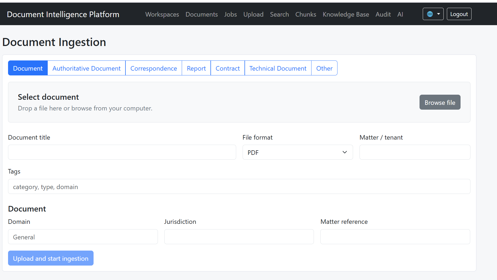

Enterprise AI Platform
A modular software platform for building knowledge-driven applications that combine semantic retrieval, document intelligence, knowledge graphs, workflow automation and local language models. The project demonstrates a reusable architecture rather than a single application.
View on GitHub →